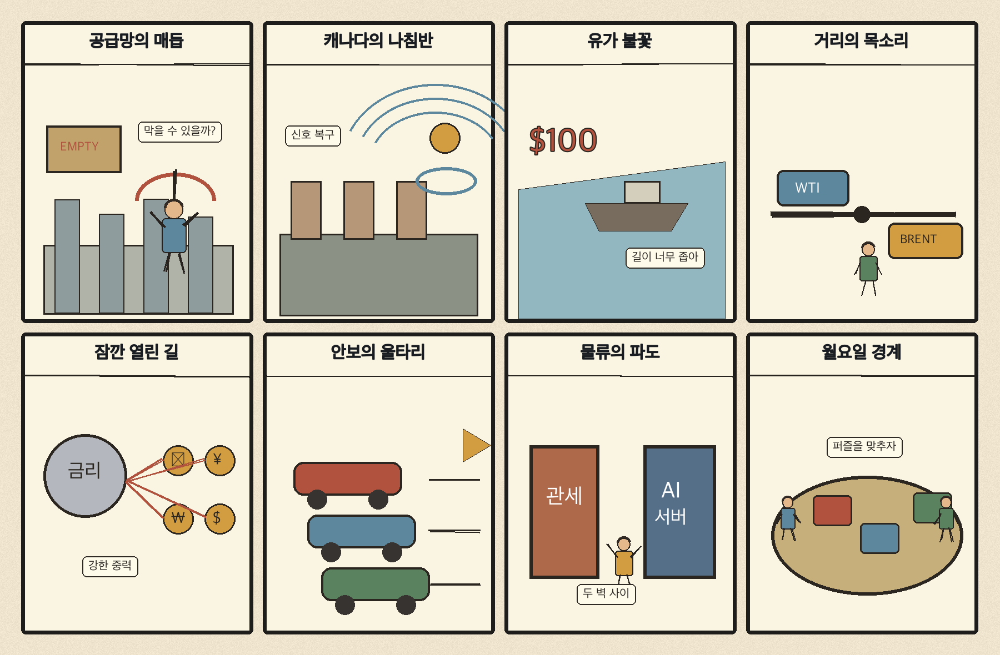
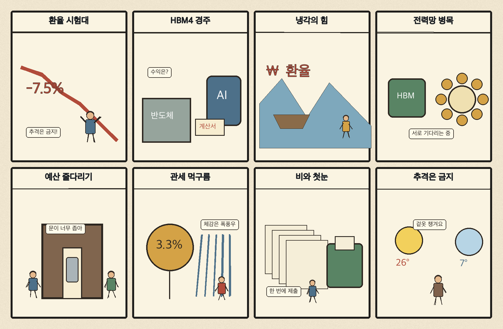

01
아마존 · 232.54→240.35달러 · +3.36%
내용요약 시가 대비 +3.36%로 조사군 최상위였으며 대형기술주 매도 속에서도 상대적 강세를 보였습니다.
예상여파 전자상거래·클라우드의 방어력을 보여주지만 기술주 전반의 변동성 확대는 유의해야 합니다.
MORNING_BRIEFING_20261101
작성 시각: 2026-11-01 06:32 KST · 직전 미국 정규장과 2026-11-01 KST 당일 공개 기사 기준
직전 미국 정규장인 10월 30일 뉴욕증시는 다우 -1.09%, S&P 500 -1.82%, 나스닥 -2.86%로 동반 하락했습니다. AI 투자 수익성 우려와 인텔 급락이 기술주 매도를 키웠습니다. 전일 KOSPI도 종가 기준 -3.48%, 시가 대비 -0.51%로 밀린 만큼 다음 거래일 국내장은 반도체 대형주와 외국인 수급의 안정 여부가 핵심입니다.
| 지수 | 종가 | 등락률 | 한국 증시 시사점 |
|---|---|---|---|
| 다우존스 | 51,770.31 | -1.09% | 경기민감주 위험회피 |
| S&P 500 | 7,580.07 | -1.82% | AI·반도체 투자심리 부담 |
| 나스닥 종합 | 25,437.00 | -2.86% | AI·반도체 투자심리 부담 |
AI 수익성 우려와 반도체 매도로 위험회피가 강해졌습니다.
금요일 5,730.74로 마감했고 시가 대비 -0.51%였습니다.
중동 확전 우려로 에너지·물류비 부담이 커졌습니다.
공식 추천 없이 월요일 갭과 외국인 수급을 관찰합니다.
10월 31일 보고서는 토요일 휴장, 미국 AI·반도체 급락과 필수 수급·컨센서스·유사 조건 표본 부족으로 공식 추천을 내지 않았습니다. 사후에 종목을 추가하지 않습니다.
| 시장 | 종가 | 등락률 | 기준 |
|---|---|---|---|
| KOSPI | 5,730.74 | -3.48% | 10월 30일 · 시가 대비 -0.51% |
| KOSDAQ | 724.38 | -3.83% | 10월 30일 · 시가 대비 -1.81% |
| 다우존스 | 51,770.31 | -1.09% | 미국 10월 30일 정규장 |
| S&P 500 | 7,580.07 | -1.82% | 미국 10월 30일 정규장 |
| 나스닥 종합 | 25,437.00 | -2.86% | 미국 10월 30일 정규장 |
아마존이 시가 대비 +3.36%로 조사군 최상위였습니다.
스포티파이 +3.21%, 액센츄어 +2.64%로 방어했습니다.
팔란티어 -4.91%, 크라우드스트라이크 -4.07%였습니다.
마벨 -4.56%, 인텔 -3.80%, 어플라이드머티리얼즈 -1.69%였습니다.
내용요약 시가 대비 +3.36%로 조사군 최상위였으며 대형기술주 매도 속에서도 상대적 강세를 보였습니다.
예상여파 전자상거래·클라우드의 방어력을 보여주지만 기술주 전반의 변동성 확대는 유의해야 합니다.
내용요약 시가 대비 +3.21% 상승해 서비스 플랫폼 종목 중 강했습니다.
예상여파 구독형 서비스의 차별화가 부각됐지만 단일일 상승을 추격 신호로 보기는 어렵습니다.
내용요약 시가 대비 -4.91%로 조사군 최하위권을 기록했습니다.
예상여파 AI 소프트웨어 고평가 논쟁이 국내 성장주에도 위험회피로 전이될 수 있습니다.
내용요약 시가 대비 -4.56% 하락하며 AI 인프라·반도체 매도 영향을 받았습니다.
예상여파 국내 반도체 공급망 심리에 단기 부담이며 월요일 갭 하락 뒤 수급 확인이 필요합니다.
내용요약 시가 대비 -3.80%였고 당일 보도 기준 종가 기준 낙폭은 더 크게 부각됐습니다.
예상여파 미국 반도체 투자심리 악화가 국내 대형 반도체와 장비주 변동성을 키울 수 있습니다.
일요일은 한국 증시 휴장입니다. 금요일 나스닥 -2.86%, S&P 500 -1.82%와 AI·반도체 매도는 월요일 국내 반도체·인터넷 성장주의 갭 하락 위험을 높였습니다. 국제유가 2%대 상승은 수입물가 부담입니다. 반면 4개월 연속 하락한 원·달러 환율은 완충 요인입니다. 월요일에는 개장 직후 추격보다 외국인 현·선물 수급과 KOSPI 5,600선 지지 여부를 먼저 확인하는 편이 낫습니다.
오늘은 추천 없음 — 현금 관망
일요일 휴장이고, 전일까지의 외국인·기관 수급, 컨센서스 변화와 30건 이상 유사 조건 표본을 함께 확보해 종합점수 75점·상승확률 60%·예상 손익비 1.5를 모두 검증할 종목이 없습니다. 주말 뉴스와 월요일 갭 위험을 확인해야 합니다.
관심 연결종목 HBM4·AI 데이터센터 냉각·전력망·정유는 관찰 대상일 뿐 매수 추천이 아닙니다. 월요일 장 초반 갭 변동 종목은 추격매수를 금지합니다.
WTI 상승과 사우디 드론·미사일 요격 이후 추가 긴장을 봅니다.
미국 기술주 매도가 국내 HBM과 성장주로 번지는지 확인합니다.
추가 인상 예고가 엔화·원화와 아시아 자금 흐름에 미치는 영향을 봅니다.
KOSPI 급락 뒤 외국인 현·선물 수급과 지수 지지력을 점검합니다.
핵심 요약: HBM4 경쟁과 AI 데이터센터 냉각·전력반도체 투자가 AI 인프라의 무게중심을 넓히고 있습니다. 주권 AI는 국산 칩의 기회지만, 물·전력·주민 수용성을 포함한 입지 비용까지 함께 봐야 합니다.
내용요약 메모리 호황 속 HBM4 경쟁이 삼성전자의 추격과 SK하이닉스의 수성 구도로 새 국면에 접어들었다는 연합뉴스 당일 보도입니다.
예상여파 차세대 HBM의 수율·고객 인증·양산 속도가 국내 반도체 실적과 공급망 주도권을 가를 전망입니다.
내용요약 LG전자가 대형 수주와 엔비디아 승인을 바탕으로 AI 데이터센터 냉각 시장을 공략한다는 조선비즈 보도입니다.
예상여파 AI 인프라 투자가 서버를 넘어 냉각·전력 설비로 확장되지만 수주가 실제 이익률로 연결되는지 점검해야 합니다.
내용요약 미국산 AI 칩 의존을 줄이려는 주권 AI 흐름에서 한국 스타트업이 대안으로 부상한다는 글로벌이코노믹 기사입니다.
예상여파 국산 AI칩에는 기회지만 성능·소프트웨어 생태계·대규모 고객 확보가 상용화의 핵심 관문입니다.
내용요약 인피니언이 오스트리아에 세계 최초 300㎜ 질화갈륨 전력반도체 양산 시설을 구축했다는 당일 보도입니다.
예상여파 전력효율 경쟁이 데이터센터와 전기차 공급망 전반으로 번지며 전력반도체의 원가·규모 경쟁이 심화될 수 있습니다.
내용요약 유타주 데이터센터 갈등을 통해 물·전력·지역 수용성 같은 AI 인프라 입지 비용을 짚은 당일 분석입니다.
예상여파 데이터센터 투자 판단에서 전력 조달뿐 아니라 주민 동의와 환경 비용이 일정 지연의 핵심 변수로 커질 수 있습니다.
핵심 요약: G20은 에너지 안보와 공급망 회복력을 강조했고 캐나다는 전략적 자율성을 내세웠습니다. 중동 확전 우려에 유가가 올랐고 프랑스 시위와 우크라이나 주민 대피는 지정학·사회 갈등이 계속됨을 보여줍니다.
내용요약 G20 외교장관회의 의장국 성명이 에너지 안보와 공급망 회복력을 강조했다는 VOA 한국어 당일 보도입니다.
예상여파 공동 대응의 방향은 제시됐지만 지정학적 갈등이 실행력을 제약해 원자재·물류의 변동성이 이어질 수 있습니다.
내용요약 캐나다가 22년 만에 새 국가안보전략을 내고 미국과 갈등 속 전략적 자율성을 강조했다는 연합뉴스 보도입니다.
예상여파 북미 안보·통상 협력의 재조정은 핵심광물과 방산, 대미 교역 규칙에 영향을 줄 수 있습니다.
내용요약 이란전쟁 확전 우려로 국제유가가 2%대 상승해 6개월 만의 최고 수준에 이르렀다는 당일 보도입니다.
예상여파 에너지 수입국의 물가 부담과 운송비가 커지고 정유·에너지 업종의 상대 강세가 이어질 수 있습니다.
내용요약 프랑스 전역의 주말 시위가 3주째 이어지고 32만명이 참여했다는 당일 보도입니다.
예상여파 사회 갈등이 장기화하면 소비·관광과 정책 집행의 불확실성이 높아질 수 있습니다.
내용요약 우크라이나 남부 올레시키에서 국지 휴전 중 주민 750여명이 대피했다는 파이낸셜뉴스 보도입니다.
예상여파 제한적 인도주의 조치에도 전선 불확실성은 남아 있어 유럽 안보와 에너지 위험 프리미엄이 지속될 수 있습니다.

핵심 요약: 환율 안정에도 미국 선거·고용과 AI 투자, 관세가 한국 경제의 변수입니다. 예산안 심사와 물가, 전력망 확충 지연을 함께 살펴야 하며 오늘은 전국 비와 강원 산지 눈에 대비해야 합니다.
내용요약 원·달러 환율이 4개월 연속 하락한 가운데 미국 선거와 고용지표를 앞두고 방향성 시험대에 섰다는 마켓인 보도입니다.
예상여파 원화 안정은 수입물가에 도움이 되지만 대외 이벤트에 따라 외국인 수급과 환율 변동성이 다시 커질 수 있습니다.
내용요약 미국 중간선거를 앞두고 AI 투자와 금리, 관세 부담이 한국 경제의 주요 변수라는 뉴스1 당일 기사입니다.
예상여파 반도체 수요와 대미 수출은 정책 변화에 민감해 기업의 투자·환헤지 판단이 보수적으로 바뀔 수 있습니다.
내용요약 동서울변환소 증설이 16차례 협의에도 평행선을 달리며 전력망 확충에 난항을 겪는다는 연합뉴스 보도입니다.
예상여파 수도권 전력망 지연은 데이터센터와 산업 전력 공급 일정, 지역 수용성 비용을 높일 수 있습니다.
내용요약 821조원 규모 예산안 심사와 10월 물가, 피치 연례협의가 이번 주 주요 정책 일정이라는 이데일리 기사입니다.
예상여파 재정 지출의 우선순위와 물가 흐름은 내수 업종, 국채 금리와 국가 신용평가 시각에 영향을 줄 수 있습니다.
내용요약 전국 곳곳에 가을비가 내리고 아침 기온이 3도까지 떨어지며 강원 산지에는 눈이 예상된다는 뉴시스 예보입니다.
예상여파 강수와 기온 하락으로 도로 안전과 야외 일정, 농작물 냉해 관리가 중요합니다.
